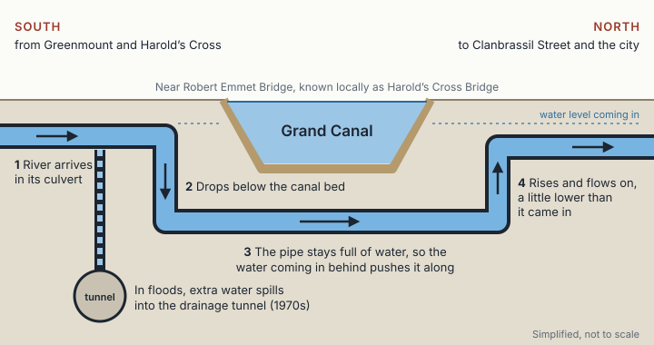
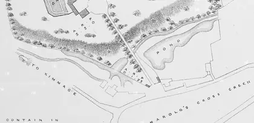
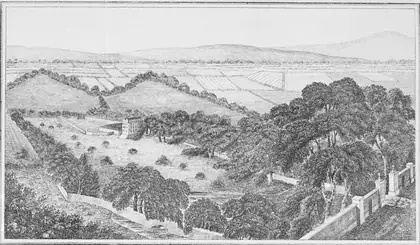
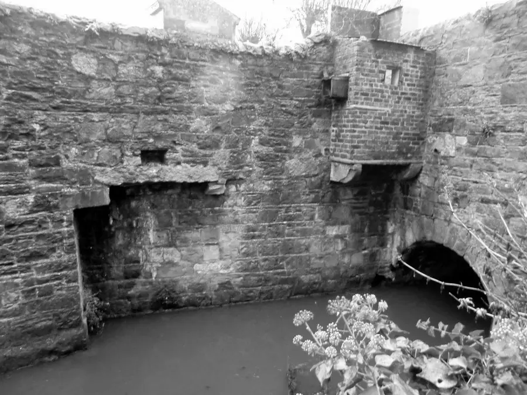
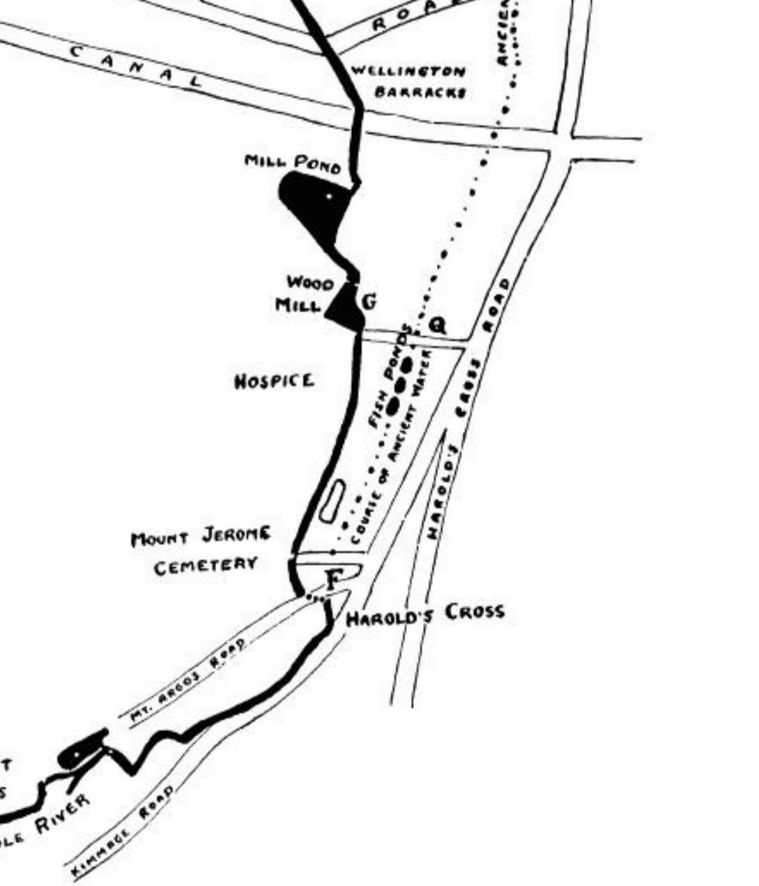
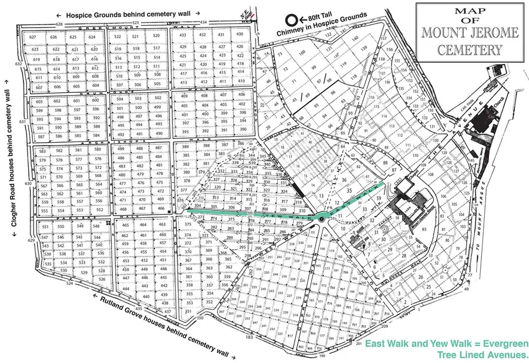
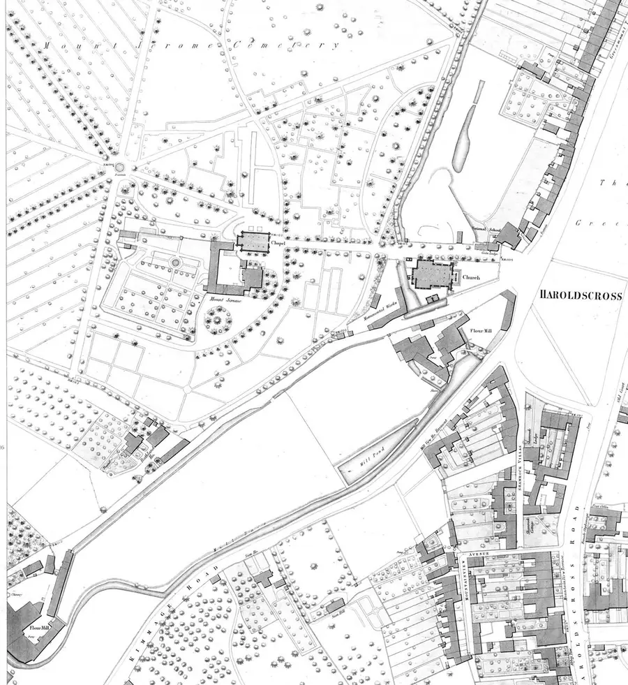

Stop 11 of 19 · Harold’s Cross
Mount Jerome
A Victorian cemetery, perhaps another monks’ diversion, and a siphon under the canal.
Mount Jerome
The General Cemetery Company of Dublin was set up by Robert Shaw under an Act of Parliament in 1834. The first burial took place on 19 September 1836, and there have been about 250,000 since.
As one of Dublin’s main cemeteries it holds many graves of historical interest, among them those of John Millington Synge and Jack B. Yeats.
Another diversion?
To enter Mount Jerome, the Poddle makes an almost right-angled turn.
In his 1927 paper, Rev. Myles Ronan asks whether this was another diversion of the original river, again made for St Thomas’s Abbey, this time to serve its mills. For that reason this stretch is sometimes called the Abbey Stream, though it is more often just called the Poddle, as it carries most of the river’s water. The map page shows the Abbey Stream, which leaves the Poddle just downstream of here, as an amber band.
Greenmount and the Hospice
A flour mill once stood near the cemetery gates. Just downstream, the Poddle powered Greenmount Mills. A corn mill on the site was turned into a cotton mill by James Greenham by 1807, and in the mid-19th century the Quaker Pim family enlarged it, making cotton and linen; the Pims were also known for Irish poplin. The mill pond survived until it was covered over in the late 1960s.
Our Lady’s Hospice, founded in 1845 by Mother Mary Aikenhead, stands on the river’s banks at Harold’s Cross, and the 1910 Ordnance Survey map shows another mill pond in its grounds. In the October 2011 floods, a nurse from the hospice lost her life.
Going underground
The stream enters the cemetery behind the Russian Orthodox Church of the Holy Apostles Peter and Paul, flows under the cemetery’s entrance road and then along its eastern boundary. From here it is culverted under Greenmount, and it passes beneath the Grand Canal in a siphon. Dublin Corporation’s minutes for 1972 record a £35,000 loan for culverting the river between Greenmount Lane and the Grand Canal.
Under the Grand Canal
Just past Greenmount the river meets the Grand Canal, close to Robert Emmet Bridge, which most people call Harold’s Cross Bridge. The canal was dug straight across the Poddle’s path in the 1790s, and ever since then the river has had to find a way underneath it. Weston St John Joyce, writing in 1912, describes it going “under the canal at Goodbody’s factory”.
It does it with a siphon: a pipe that dips down below the canal bed and comes up again on the far side. In 2003 archaeologists watching groundworks at 25 Parnell Road, beside the canal, looked down a manhole and found a fast-flowing watercourse at least five metres below the surface. They took it to be the culverted Poddle, running deep enough to pass beneath the canal.

How a siphon works
Water always tries to find its own level. If a pipe dips down and comes back up again, and its far end is a little lower than its near end, the pipe fills right up and stays full. Every bit of water that flows in at the top pushes the same amount out at the other end, so the river keeps moving without any pump at all.
Engineers call this an inverted siphon, because it dips down under an obstacle instead of going up and over it, like the tube used to empty a fish tank. It has two drawbacks. Silt and rubbish settle at the lowest point and have to be cleared, and fish can’t easily get through. The flood scheme’s ecologists name the siphon as one of the barriers that keep trout and eels out of the Poddle.
The siphon today
The structure there now is described as late 20th century. Around the time of the 1972 culverting, Dublin Corporation was also digging the Grand Canal Tunnel, a sewer 4.8 km long and 3.6 metres across that runs beside the canal towards Ringsend. One of its jobs, according to Dublin City Council, is to take storm water from the Poddle and the Swan River and so cut the risk of flooding. At the canal the Poddle has an overflow into this drainage pipe, so in a flood some of its water can escape there instead of backing up into Harold’s Cross. RTÉ reported in July 1975 that the tunnel had taken two and a half years to build and cost £4 million.
The City Watercourse had a crossing of its own, just east of Dolphin’s Barn Bridge. A newspaper report of a flood in March 1937 says that the stream then ran underground for 400 yards from above Rutland Cottages and emptied into the canal near the bridge. Today the Grand Canal Tunnel intercepts it there.
We still don’t know how the Grand Canal Company carried the river across when the canal was first dug in the 1790s, or who did the work. If you know of a drawing, a record or a memory of it, please get in touch.
Harold’s Cross village
Harold’s Cross was a small village south of the city until the middle of the 18th century; Rocque’s map of 1760 shows houses clustered around its green. It grew quickly in the late 18th and early 19th centuries with the Grand Canal, and Taylor’s map of 1816 and Duncan’s of 1821 show terraces along Harold’s Cross Road. The wedge-shaped park in the middle is the old village green and medieval common, which stayed open ground until the Rathmines Township Commissioners laid out the present park in 1893 and 1894. Harold’s Cross had its mills too: a sketch of the old Harold’s Cross laundry shows its water wheel in the Poddle.
Source: Kimmage BusConnects scheme documentation.
Mount Jerome’s name
Mount Jerome is named after the Rev. Stephen Jerome, a 17th-century preacher and vicar of St Kevin’s. The lands had belonged to St Thomas’s Abbey; after the abbey was dissolved they passed to the Brabazons, later Earls of Meath, and the house was later home to the Wilkinsons and the Keoghs. The General Cemetery Company bought the 47-acre estate in 1836 and modelled the cemetery on Highgate in London. It was mainly a Protestant burial ground at first. By the late 20th century it was badly neglected and went into voluntary liquidation in 1984; new owners took over in 1998 and opened a crematorium in 2000.
Behind the Russian Orthodox church by the cemetery gates there is a short open stretch of the river with some interesting old stonework, before it follows the cemetery wall and goes into its culvert.
Plans to bury the river
The Poddle, the Abbey Stream and the Tenter Water all pass under the Grand Canal, and in the 20th century the canal and the river were caught up in the same plans. In 1961 Dublin Corporation’s Streets Committee proposed using the line of the canal for a new sewer to Ringsend, and in October 1963 the City Engineer proposed turning the canal itself into a culvert with a sewer beside it, together with the “long-overdue” culverting of the Poddle from Kimmage Manor. Canal societies objected, and in the end the Grand Canal Tunnel was laid beside the canal instead.
In the early 1970s the Corporation asked for £35,000 to culvert the river. Eventually, it said, the whole 1,000 metres from south of Kimmage Manor to the canal would have to go underground; the urgent part was the 240 metres from Greenmount Lane to the canal, whose walls were weak and at risk of collapse in places.
The canal has its own memories of the river. On the Night of the Big Wind, 6 January 1839, trees along the canal banks were torn up, a boat capsized in Portobello Harbour, and the Poddle burst over its banks.
Pictures from the archive




Pictures gathered by the Crumlin and Walkinstown History Group for their Poddle research, shown here in black and white. If you know more about any of them, or hold the rights to one, please get in touch.
Watch and read
- Excavations.ie: 25 Parnell Road, Harold’s Cross (2003)
- Dublin City Council: Grand Canal storm water outfall, EIA screening report (2020)
- RTÉ Archives: Dublin drainage tunnel (1975)
- Karl Whitney, The Irish Times: Down Dublin’s drains (2014)
- Weston St John Joyce, The Neighbourhood of Dublin: the old city water supply
From the planning file
Facts from the flood scheme’s planning application and four local planning files.
Poddle People
- Mary Aikenhead: Founded the Hospice on the river
Meander off the walk
A detour from this stop, off the main line of the river.
- Along the Abbey Stream: The monks’ mill stream, from the Hospice under the canal to Donore Avenue, Mill Street and Marrowbone Lane.
Parts of this page draw on research by the volunteers of the Crumlin and Walkinstown History Group, shared with poddle.ie. About their research.







